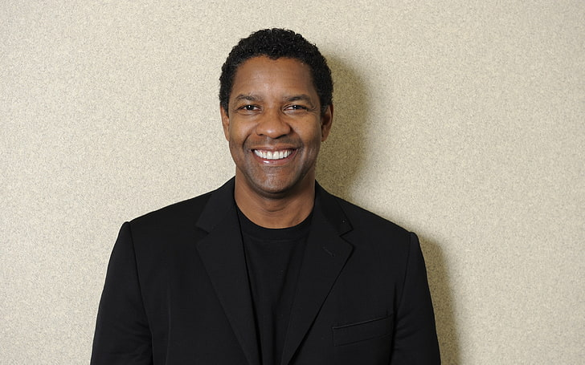

Hollywood is an area in Los Angeles County in the state of California in the United States of America between the west
and northwest of the city center of Los Angeles.
| Youssef Al-Sharifis Egyptian actor. His real name Mohammed Ismail Naji, was his first appearance in the film seven papers kuchinh in the starring role, and then took part in the film open your eyes, serial client 1001. | |
Keanu Charles Reeves is a Canadian actor. He was Born in Beirut and raised in Toronto, Reeves began acting in theatre productions and in television films before making his feature film debut in Youngblood (1986). | |
| Denzel Washingtonis an American actor. he is one of the great actors in Hollywood and he is also one of the actors who are serious in their accent, yet he has the talent and harmony in all his roles that are full of drama, excitement and comedy. Received the Cecil B. |  | Willard Carroll Smith Jr is an American actor. he is a representative of the US, and Raper and film producer, and producer of songs, and writer was born on September 25 1968 Enjoy success in TV, movies, and songs. | |
| Schwarzenegger is an Austrian actor. he began weight training at the age of fifteen, and won the title of master of the universe Mr. Universe at the age of 22 also won the Mr. Olympia competition. Olympia seven times. Schwarzenegger has been a prominent figure. | |
Cillian Morphy is an Ireland actor. and He was born born on the 25th of May 1976 and he is the eldest of his three siblings. His father used to work in the education sector and his mother was a teacher of the French language. | |